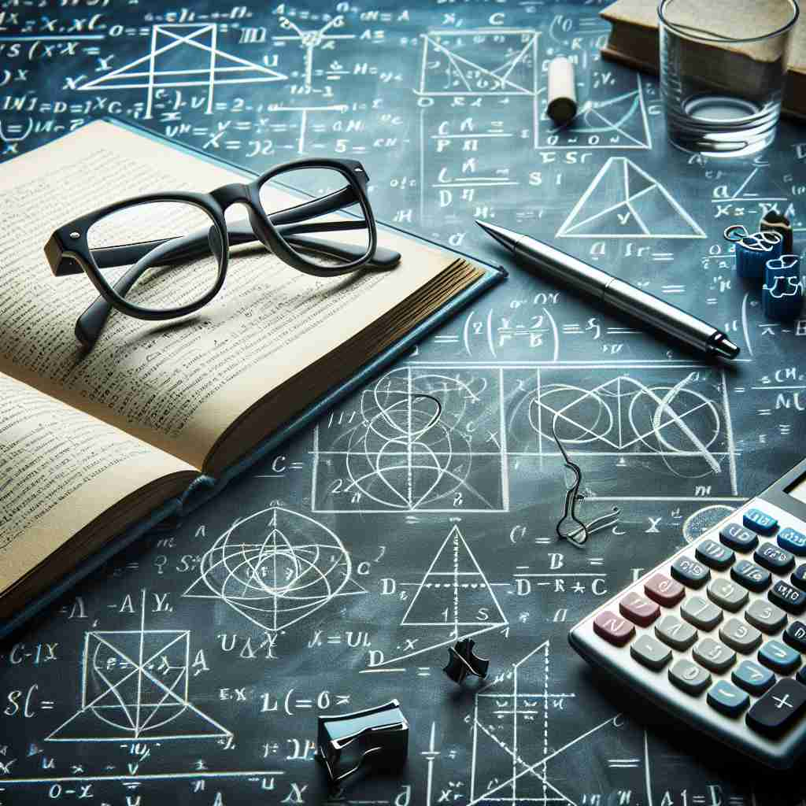

💬 The students are excited for the math lesson today.

💬 The students are focused in their math class.
💬 The students are excited about the math lesson today.

💬 The student is focused on his math study at the table.
🔈 [mæθ]
🗝️ n. the study of numbers, quantities, and shapes
🖼️ 想象一个明亮的教室，黑板上写满了各种图形和公式。学生们专注地听讲，老师正在讲解如何用数学方法解题。这一场景生动地展示了'math'作为研究数字、数量和形状的学科。
🔍 记住'math'的核心含义是'数学研究'。想象一个包含数字、数量和形状的大圆。从这个核心出发，我们可以延伸到具体的数学计算（小圆圈），以及数学在其他领域的应用（向外延伸的箭头）。这个心智图像可以帮助你更好地理解和记忆'math'的各种用法。
💬 The students are excited for the math lesson today.
💬 The students are focused in their math class.
💬 The students are excited about the math lesson today.
💬 The student is focused on his math study at the table.
🌳 单词 'math' 是词根 'math-' 的简写，源自希腊语 'mathema'，意为 '知识、学习'。常用在与数学有关的术语中。
💡 记忆 'math' 时，可以联想到 'mathematics' 的缩写形式，这样有助于理解它与数学知识相关的含义。通过将 '学' 和 '知识' 的概念联系一起，便于记忆。
🗝️ n. mathematical calculations or operations
🖼️ 在一家繁忙的工程公司，工程师正在计算一个项目的预算。他仔细地在纸上写下列式和数字，不时用计算器辅助。这一过程展示了‘math’作为数学计算和操作的具体应用。
💬 Can you do the math to figure out how much we owe?
❓ 从数学研究扩展到具体的数学运算
🗝️ n. the mathematical aspects of something
🖼️ 在一个建筑工地上，建筑师解释着大楼设计图纸中的数学部分。他向工人们展示图纸上标有精确测量的数据，强调每个数字在施工过程中的重要性。这个场景突出了‘math’作为事物的数学方面。
💬 The math behind this economic theory is quite complex.
❓ 将数学概念应用到其他领域